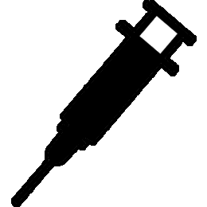

Copyright 2010 by Kevin B. Smith
Art by Todd Sanders
For more information about this game, see the Epidemic Express page on BoardGameGeek
There are five diseases poised to spread around the world:
To win the game, you must cure all five diseases. A cured disease is indicated with a "shot" icon:  If any disease ever exceeds level 6, it has become unstoppable, and you lose. If the Panic Level ever exceeds level 6, civilization has broken down, and you lose.
Each turn consists of three phases:
There are six roles, each of which allows one special ability (or in one case, forcing a bad effect). The effects listed here won't make a lot of sense until you have read the rest of the rules, but you can come back to them later.
Each turn, roll a die to determine which role will be active for this turn:
The number of infection dice to roll starts at 3, and increases by one each time a disease is cured. Roll all the infection dice once. If there are two or more Panics, increase the Panic Level by 1. Next, eliminate duplicate dice. For each disease remaining, advance the corresponding level by 1. If the current role is Medic, one of the diseases that would have increased will instead remain unchanged.
For example, if you roll:
then the Panic Level would not change,
but you would increase the levels of Avian Flu, Swine Flu, and Ebola by one level each.
However, if you were the Medic, only 2 of those 3 diseases would increase.
If the current role is Bio-terrorist, all the disease levels automatically increase by 1, so there is no need to roll the infection dice. In that case, Panic will not increase.
Roll (and/or re-roll) 5 dice up to 3 times (If the current role is Researcher, you get 4 rolls instead of 3). Dice that will be kept (not re-rolled) are indicated with a checkmark
Any time you choose to re-roll a die that was a Panic, the Panic Level increases by one (unless the current role is Epidemiologist, in which case Panic dice can be re-rolled without penalty).
After the rolls, if you have four Panics, the Panic Level decreases by one (If the current role is PR Expert, you can reduce the Panic Level with only 3 Panic dice). If you have four of any other value, you can cure that disease (If the current role is Scientist, and you roll 3 of one disease, and 2 of another disease or panic, then the disease with 3 dice is cured). Otherwise, for each die showing 1 through 5, you can reduce the level of that disease by 1 (but never below 1). On a turn where you cure a disease or reduce the panic level, you can use the fifth die to treat a disease.
Dice for diseases that have already been cured simply have no effect.